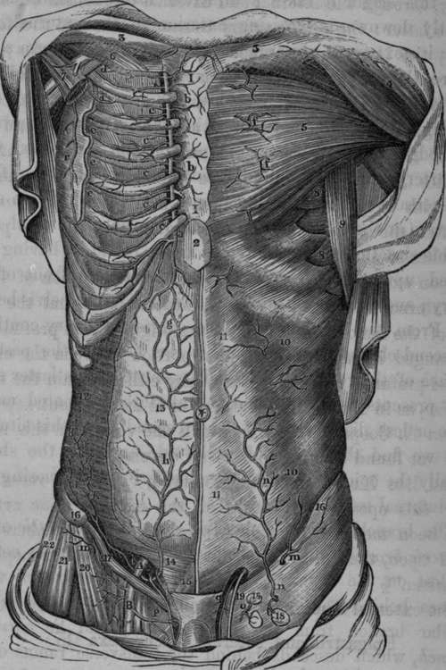

Sir A. Cooper's Operation On The External Iliac Artery
Description
This section is from the book "Anatomy Of The Arteries Of The Human Body", by John Hatch Power. Also available from Amazon: Anatomy of the Arteries of the Human Body, with the Descriptive Anatomy of the Heart.
Sir A. Cooper's Operation On The External Iliac Artery
"A semilunar incision is made through the integuments in the direction of the fibres of the aponeurosis of the external oblique muscle. One extremity of this incision will be situated near the spine of the ilium; the other will terminate a little above the inner margin of the abdominal ring. The aponeurosis of the external oblique muscle will be exposed, and is to be divided throughout the extent and in the direction of the external wound. The flap which is thus formed being raised, the spermatic cord will be seen passing under the margin of the internal oblique and transverse muscles. The opening in the fascia which lines the transverse muscle, and through which the spermatic cord passes, is situated in the mid-space between the anterior superior spine of the ilium, and the symphysis pubis. The epigastric artery runs precisely along the inner margin of this opening, beneath which the external iliac artery is situated. If the finger, therefore, be passed under the spermatic cord, through this opening in the fascia, it will come into immediate contact with the artery, which lies on the outside of the external iliac vein. The artery and vein are connected by dense cellular tissue, which must be separated, in order to allow of the ligature being passed round the former."*
* " Cases in Surgery by John Kirby," p. 104.
† Crisp on the Structure, Diseases, Ac. of the Blood-Vessels, p. 226.
According to Mr. Abernethy's method, two-thirds of the longitudinal incision are made over a portion of peritoneum which closely lines the abdominal muscles, and does not require to be separated: it is therefore uselessly endangered. Moreover, the division of the muscles in this direction weakens the abdominal parietes, and gives a tendency to the formation of hernia, which occurred in Mr. Kirby's case. For these reasons Sir A. Cooper's operations is generally preferred. It has been said that Mr. Abernethy's mode gives greater facility of tying the artery high up if necessary ; but this can be equally well effected by enlarging the external angle of the incision, recommended by Sir A Cooper.
In either operations the greatest care should be taken that no injury be done to the peritoneum. In Dr. Post's practice, however, an instance occurred in which this membrane was so thickened by disease that he could not detach it, but was obliged to make an opening in it, and include a part of it in the ligature. The surgeon should attend also to the origin and course of the epigastric artery in relation to this operation. Dupuytren lost a patient by wounding it; and Beclard, by tying the iliac immediately beneath its origin, so that sufficient room was not left for the formation of a coagulum: in some cases this vessel arises six or eight lines higher up than usual, and the operator should therefore search for its origin, and apply the ligature above it. The proximity of the vas deferens and the femoral branch of the genito-crural nerve to the artery are also to be borne in mind.
When the trunk of the external iliac artery is tied, the limb is abundantly supplied with blood by the branches of the internal iliac in the following manner :—the glutaeal branch of the internal iliac transmits blood to the femoral artery, through the internal and external circumflex branches of the latter: the sciatic artery transmits blood to the femoral by the internal circumflex and perforating arteries" and to the popliteal through the comes nervi ischiatici :* (Boyer mentions an instance where this small branch, eight months after the operations for popliteal aneurism, had attained the size of the radial artery at the wrist:) the obturator artery supplies the femoral through the branches which communicate with the internal circumflex: lastly, the pudic artery supplies the femoral by its communication with the pudic branches of the latter.
* Hodgson on the Arteries and Veins, p. 421.
Upon examining the limb on which the operations of tying the external iliac has been performed, we find that the portion of the femoral artery below the origin of the profunda is unchanged in calibre ; while that portion between the origin of the profunda and the ligature may either remain the natural size, as in Mr. Norman's case,† or it may be contracted, as in Sir. A. Cooper's case,‡ in which the vessel, in this situation, was found reduced to one-half its size.
The late Mr. Wilmot has observed, "that the recoveries after this operations (ligature of the external iliac artery) have been more frequent, in proportion to the numbers operated upon, than after tying the femoral artery for popliteal aneurism."§
The external iliac artery gives off two branches, viz., the Epigastric and Internal Circumflexa Ilii; and then terminates in the Femoral.
* See Med. Chirurg. Trans., vol. iv., and Guy's Hospital Reports, No. 1, Jan. 1836.
† Med. Chirurg. Trans., vol. xx.
‡ Guy's Hospital Reports.
§ Dub. Hosp. Report, vol. ii. p. 214.
Fig. 57. Represents the course of the Internal Mammary and the Epigastric Arteries. At the right side the muscles have been partially removed, in order to expose the anastomosis between these vessels.
A, External Iliac Artery. B. Femoral Artery, a, a, Costal Cartilages, b, b, Perforating branches of the Internal Mammary Artery. c, c, c, c, c, Anterior Intercostal branches of the Internal Mammary. d( d, e, e, e, External Intercostal branches. g, Anastomosis between the Internal Mammary and Epigastric Arteries, h, Epigastric Artery, i, Internal Circumflexa Ilii Artery, k, k, l, Twigs from the Circumflexa Ilii Artery, m, m, External Circumflexa Ilii. n, Superficial Epigastric Artery from the Femoral, o. Glandular twigs from the Femoral. P, Superficial Pudic Branch, q, Spermatic Artery, r, Long Thoracic Artery. I, I, The Sternum. 2, Xiphoid appendix. 3, 3, Clavicles. 4, Deltoid Muscle. 5, Great Pectoral Muscle. 6, Subclavius Muscle. 7, Portion of Lesser Pectoral Muscle. 8, 8, Serratus Magnus Muscle. 9. Latissimus Dorsi Muscle. 10, 10, External Oblique Muscle. 11. 11, Linca Alba, 12, Transversalis Abdominis Muscle. 13, Peritoneum. 14, Portion of Internal Oblique and Transversalis Abdominis—the dotted lines show the course of the Epigastric Artery in this region. 15, Pyramidalis Abdominis, 16, Anterior Superior Spine of Ilium. 17, Poupart's Ligament. 18. 18. Superficial Inguinal Glands. 19, Vas Deferens. 20, Sartorius Muscle. 21, Tensor Vaginae Femoris. 22, Glutaeus Medius.
Continue to:
- prev: Operation Of Tying The External Iliac Artery. Mr. Abernethy's Method
- Table of Contents
- next: The Epigastric Artery